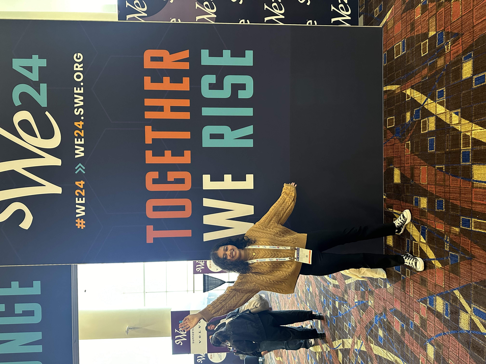
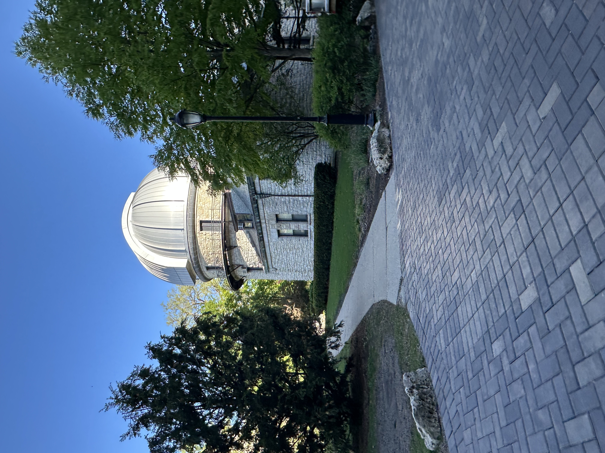

Society of Women Engineers
I currently serve as Co-President of Northwestern SWE oversee all committees that create opportunities for over 300 undergraduate women engineers. Previously as HeForSWE director, I was involved in creating discussion around gender equality on campus. SWE has also been a way for me to connect with a larger network of women engineers through attending national conferences and organising on-campus events.


Dearborn Observatory
I work part-time as a tour guide at the Dearborn Observatory on campus, which is home to an 18.5" telescope lens made in 1861. I enjoy sharing the observatory's history with public audiences of 30-100 people and operating the refractive telescope. My favourite things to see through the telescope are the moon and saturn!
